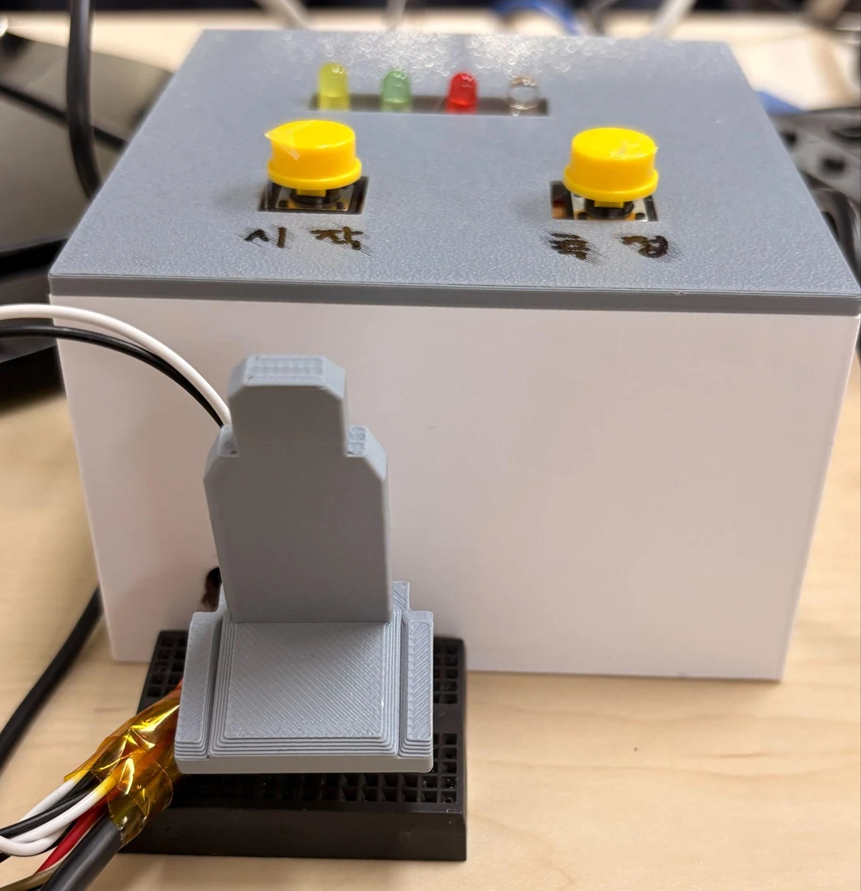
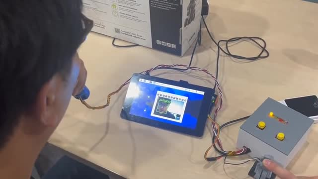
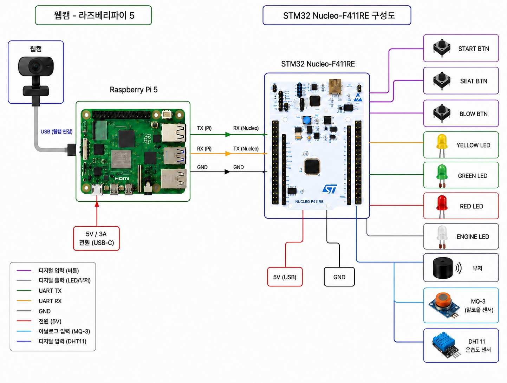
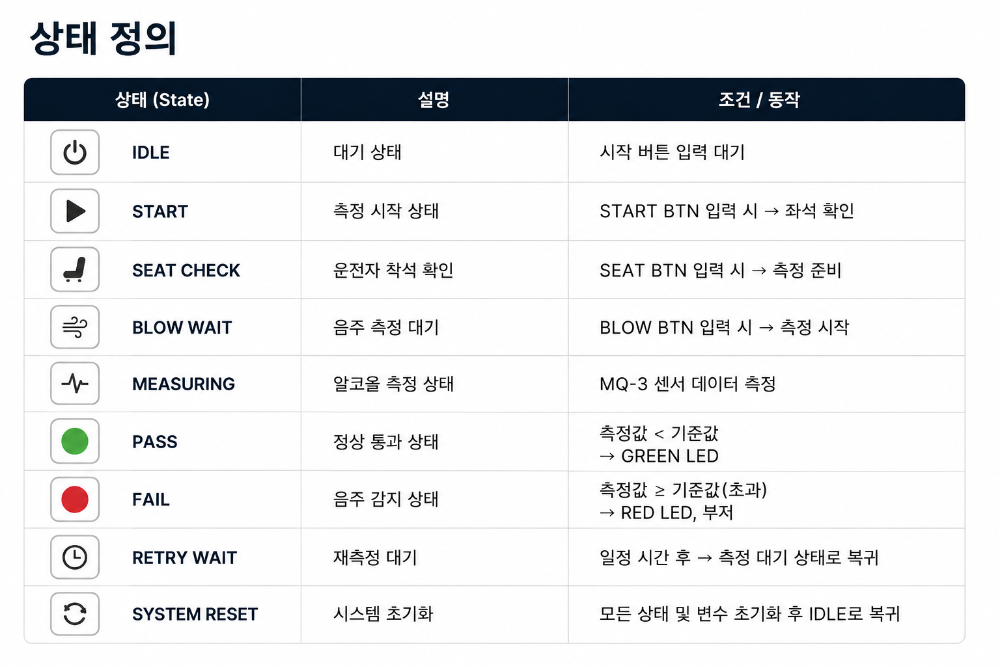
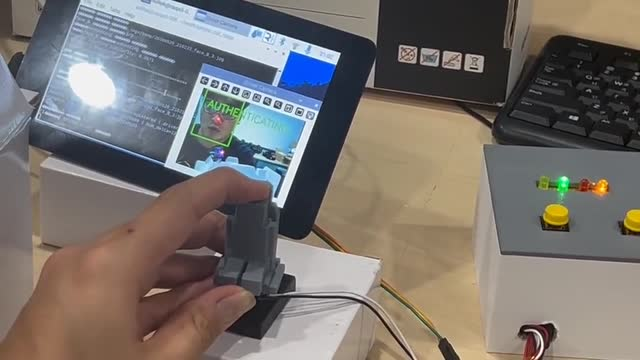

음주 측정과 시동 허용을 연결한 음주컷
착석·호흡·음주 측정과 얼굴 확인을 함께 다루는 시동 잠금 프로토타입입니다.


전체 시스템
Raspberry Pi는 카메라 기반 측정자 확인과 전체 판단을 담당합니다. STM32는 착석·측정 입력과 센서값을 수집하고 LED·부저를 제어합니다.
측정과 판정
MQ-3 기준값과 측정값의 변화를 확인하고, 측정 결과를 UART 메시지로 교환합니다. 정상 통과, 음주 감지, 재측정, 다른 측정자에 대한 분기를 구성했습니다.
구현 범위
실제 차량 시동 대신 LED 출력으로 동작을 확인한 프로토타입입니다. 최종 제작 장치로 등록자 확인과 정상 측정, 자리 이탈 시 동작을 시연했습니다.
입력·측정·판정을 분리한 펌웨어
하드웨어를 구성하고 상태별 입력과 UART 메시지에 맞춰 출력을 제어했습니다.


회로와 입력 구성
착석 버튼과 불기 시작 버튼, MQ-3·DHT11, 상태 LED·부저를 구성했습니다. STM32 TX/RX와 Raspberry Pi RX/TX를 연결하고 공통 GND를 구성했습니다.
상태 머신
착석 → 호흡 대기 → 측정 → 결과 대기 → 허용·차단을 상태로 분리했습니다. 코드 설정은 측정 5초, 결과 대기 10초, 재측정 안정화 5초입니다. 상태·시간 설정 코드 ↗
UART 메시지
STM32는 SYSTEM_START, SEAT_ON/OFF, BLOW_START와 측정 데이터를 전송합니다. UART 1바이트 인터럽트 수신으로 응답을 모으고 PASS / FAIL / RETRY / OTHER를 분기합니다. 수신·응답 처리 코드 ↗
측정 시작과 자리 이탈을 구분하도록 개선
초기 데모의 입력 방식을 나누고, 호흡 확인과 재측정 대기를 추가했습니다.

01 · 단일 감지 버튼의 한계
초기 DETECT 입력을 SEAT와 BLOW로 분리했습니다. 측정 중 자리 이탈은 SEAT_LOST_WAIT로 전환해 10초간 복귀를 기다립니다. 복귀하면 호흡 대기로, 시간 초과 시 FAIL로 이동합니다.
02 · 실제 호흡 입력 확인
MQ-3만으로는 사용자가 측정기에 숨을 불었는지 구분하기 어려워 DHT11의 습도 변화량을 함께 확인했습니다. 유효 측정이 아니면 재측정 흐름으로 전환합니다.
03 · 재측정 대기와 응답 시간 초과
RETRY에서는 5초 안정화 후 다시 호흡 입력을 기다립니다. 결과 응답이 10초간 없으면 ERROR를 전송하고 IDLE로 돌아갑니다. 최종 발표는 불지 않음·정상·음주·대리 측정·이탈 사례를 구분해 시연했습니다.